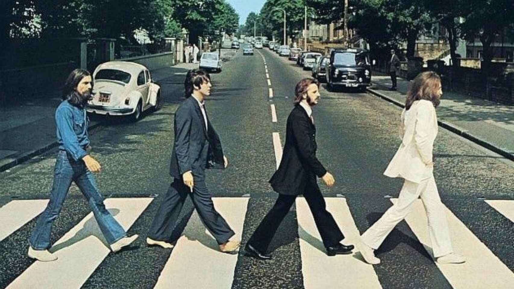

O Rock morreu? Gene Simmons garante que sim, mas há uma penca de gente que jura que não. Bom, o jeito de fazer o bom e velho rock and roll talvez esteja realmente morto, porque, na era do streaming, ninguém mais dá bola para os trabalhos conceituais que deram origem a álbuns icônicos na história da música, como “Sgt. Peppers Lonely Hearts Club Band” ou “The Dark Side of the Moon”, por exemplo. Aliás, só a extensão dos títulos desses álbuns já é suficiente para afastar a (pouca) paciência da turma da farofa pronta, pois, afinal de contas, quem quer ter que pensar quando o intuito é apenas se divertir, não é mesmo? Por isso listamos as 10 bandas mais importantes da historia.
10 - Nirvana
Essa talvez seja a escolha mais questionável da lista. Por vários motivos: há quem diga que Kurt Cobain e seu trio de Seattle não fizeram nada mais do que repetir o que o punk já vinha fazendo há anos, mas com camisas de flanela e caras de sono. Mas também há os detratores (e aqui eu me incluo) que sequer consideram o Nirvana a melhor banda de Seattle e do movimento grunge, que também conta com pérolas como o Pearl Jam, o Soundgarden e o Alice in Chains. E, enfim, Cobain não era nenhum grande guitarrista, tampouco um notável vocalista.
O que fazem do Nirvana, então, a última bolachinha do pacote do rock and roll? É simples: além da cena pop rock já estar cansada das fórmulas batidas do rock de arena das bandas de hard rock e heavy metal do fim dos anos 1980, Cobain soube como ninguém extrair dos seus três acordes e guitarras extremamente distorcidas o ambiente perfeito para as suas letras gritadas mas, ao mesmo tempo, profundamente melancólicas.
É bom lembrar que a década de 1990 foi a última do Século 20 e nela tínhamos o rescaldo de toda a esperança que a humanidade depositava em si mesmo depois de um ciclo que viu duas guerras mundiais, a AIDS, as drogas e a axé music (isso porque não sonhavam que no Século 21 teríamos o arrocha, o funk carioca e o sertanejo universitário). Mas tivemos também a popularização da internet e do cd player.
Nesse contexto, o sucesso estrondoso do rock gutural e introspectivo do Nirvana notabilizou o grunge e propiciou que as demais (grandes) bandas que o integravam tivessem o merecido sucesso.
9 - Sex Pistols
Tudo bem que os Ramones surgiram antes (1974), mas foram os Sex Pistols (1975) e o movimento punk da Inglaterra que eternizaram o esquema rock de três acordes, que flexibilizou a ditadura do instrumental e se concentrou na importância das letras, cujo deboche e ironia representavam, na verdade, uma nova onda da contracultura rebelde inaugurada pelos Beatles e pelos Stones nos anos 1960.
Concordemos ou não com os sarcasmos de “God Save The Queen”, por exemplo, quando Johnny Rotten canta que a Rainha não é um ser humano, o punk rock abriu as portas para que qualquer um pudesse montar a sua banda e, enfim, dissesse o que quisesse, da forma como bem entendesse. Isso é bom, já que é inclusivo, mas, por outro lado, também é ruim, e pelo mesmo motivo, já que qualquer um fazendo música significa que música passa a ser qualquer coisa. Mas, como gosto é gosto, nada debaixo do céu pode ser ignorado.
8 - Queen
Em 1970, o Queen surgiu como mais um nome na cena do rock progressivo, junto com gigantes como Yes, Genesis e Jethro Tull. Mas o talento de Freddie Mercury, John Deacon, Brian May e Roger Taylor não permitiu — felizmente — que a Rainha ficasse confinada nessa caixinha.
Com o passar do tempo, o Queen foi se enveredando em outras vias, para a felicidade geral do rock e para a lamentação dos puristas. Clássicos de diferentes matizes, como “Crazy Little Thing Called Love” (rockabilly), “Another One Bites the Dust” (funk) e “Radio Ga Ga” (música pop) provaram que nem só de virtuosismo e rebeldia vive o bom e velho rock and roll. É possível também chacoalhar nossos ossos com música divertida e bem-feita.
E, claro, há um capítulo à parte que é Freddie Mercury e suas inúmeras qualidades de rockstar, que vão desde a voz potente e inconfundível (seguramente, para mim, a maior voz da história do rock) até as performances ensandecidas que fizeram a fama da banda e dele próprio, o que levou a qualidade e importância de um bom frontman a novos patamares, nunca antes explorados.
7 - Black Sabbbath
Sabe aquela história ali de que o rock pesado se divide em dois? Pois é. O Black Sabbath é o responsável por isso. Diferente de Led Zeppelin e Deep Purple, que faziam sons mais melodiosos e cadenciados — embora pesados — o Sabbath, após um primeiro período calcado no blues (quando adotou nomes como Polka Tulk Blues Band e Earth), investiu em guitarras distorcidas e afinações baixas, visual obscuro e temáticas ocultistas em suas letras.
Muito embora devamos lembrar que a expressão heavy metal tenha sido utilizada antes, no famoso hino motociclístico “Born to be Wild”, do Steppenwolf, são os bons velhinhos do Sabbath que eternizaram o som que deu origem a todas as suas subdivisões, como o NWOBHM (New Wave of British Heavy Metal) de Iron Maiden e Judas Priest, o trash metal do Metallica, o death metal, o power metal e tantos outros metais que tanto amamos.
Por isso, moçada, demos graças ao Senhor das Trevas Ozzy Osbourne e sua trupe. E oremos.
6 - Led Zeppelin
Ninguém toca mais alto que o Led. Era o que diziam quando o sucesso estrondoso do Zeppelin gigante tomou o mundo — seria a Geni de Chico Buarque uma espécie de lamentação pela invasão do rock em solos tupiniquins?
A importância do Led Zeppelin, formado em 1968 a partir de espólios dos Yardbirds (seu primeiro nome foi The New Yardbirds) vai muito além da potência sonora de Robert Plant em “Stairway to Heaven”. Seus clássicos baseados na guitarra distorcida de Jimmy Page, no baixo retumbante de John Paul Jones e na bateria destruidora de John Bonham deram origem ao que podemos chamar, genericamente, de rock pesado, posteriormente dividido em hard rock e heavy metal.
Mas não é só: a técnica apurada dos músicos, aliada aos visuais extravagantes, influenciou as bandas da posteridade a se inspirarem não só na qualidade da execução, como o Van Halen e o Whitesnake, por exemplo, mas também no glamour que dominou boa parte do rock dos anos 1980, o que vemos em bandas como Def Leppard e Bon Jovi.
5 - Cream
Eric Clapton surgia como o melhor guitarrista de blues do mundo (Jimi Hendrix, é claro, devia discordar), quando encontrou Ginger Baker (bateria) e Jack Bruce, o baixista mais entojado e arrogante do mundo (basta lembrar que ele disse que o Led Zeppelin era péssimo), para formar o Cream em 1966.
Era a pitada que faltava para que as bandas passassem a ter como referência um rock influenciado pelo blues, com altas doses de talento e criatividade, como se pode ver em “Sunshine of Your Love” e na versão do clássico “Crossroads”, do lendário Robert Johnson (1936).
4 - Pink Floyd
A história do Pink Floyd é frequentemente dividida em três fases. A primeira é conhecida como era Barret, pois, a partir de sua formação, em 1965, a banda era notória por sua psicodelia e experimentalismo, altamente cultivados, principalmente, por Syd Barret, o primeiro guitarrista. Conta-se, aliás, que eles se encontraram com os Beatles no Abbey Road Studios durante as gravações de seu primeiro álbum, “The Piper at the Gates of Dawn”, o que coincidiu com os registros de “Sgt. Peppers”.
Se ficassem somente aí, poderíamos facilmente enquadrar o Pink Floyd como uma mera influência do rock psicodélico disseminado pelos Beatles a partir de “Rubber Soul” (1965), mas a segunda fase da banda (batizada de era Waters, em função da predominância criativa de Roger Waters) fez explodir o que se chamou de rock progressivo. A saída de Syd Barret em função de seus problemas com drogas culminou com a integração definitiva de David Gilmour, guitarrista com muito mais recursos. O incremento de qualidade técnica fez com que grandes obras surgissem, a partir da exploração de longas passagens instrumentais, que mostravam a habilidade dos músicos, o que nos deu clássicos como os álbuns “The Dark Side of the Moon”, “Wish You Were Here”, “Animals” e “The Wall”.
Mas, como Roger Waters passou a achar que era maior que o Pink Floyd — e talvez tenha pensado que era maior que o próprio rock — decretou o fim da banda após o lançamento de “The Final Cut” (1983), o que rendeu uma disputa judicial com Gilmour pelo direito de continuar usando o mítico emblema Floyd. A terceira fase da banda, chamada de era Gilmour, atesta quem venceu a disputa.
3 -The Doors
A importância dos Doors nessa lista vem não só da capacidade do quarteto californiano em criar grandes músicas, mas também por colocar a América no mapa das bandas de rock em 1965. Como vimos acima e veremos abaixo, grande parte do legado e influência do rock de bandas sobre a posteridade vem do Reino Unido.
Mas Jim Morrison e companhia provaram que o rock americano não se restringia aos grandes artistas solo e mesclaram a rebeldia dos Stones com certa psicodelia e a inovação das mensagens inspiradas em… bem, melhor não comentar muito sobre as substâncias, mas, apenas a título de ilustração, o nome da banda veio do livro “The Doors of Perception” (1954), de Aldous Huxley, no qual o notório escritor inglês defende que o uso de certas drogas (no caso dele, mescalina, no de Morrison, LSD, heroína e outras) livraria o cérebro humano de filtrar as impressões que suas convenções políticas e religiosas impediam.
O resultado foram clássicos do rock, como “Light My Fire”, “L.A. Woman” e “Roadhouse Blues”, mas, meninos, não tentem isso em casa.
2 - Rolling Stones
Enquanto os Beatles se formaram em 1960 (ainda com Pete Best na bateria, um dos vários “quintos Beatles” existentes), os Stones apareceram em 1962. Mas, ao contrário de serem mera reprodução do quarteto de Liverpool, o quinteto londrino introduziu, desde sempre, referências próprias em seu estilo, o que, de fato, influenciou de forma autônoma vários artistas e bandas posteriores.
Não que os Beatles fossem os bons moços e os Stones os bad boys. Mas a verdade é que a postura de Mick Jagger e sua turma, mais irreverente e escrachada desde sempre, transmitiu à juventude de então um ar de maior rebeldia, afinal, é próprio da moçada não estar — nunca — em estado de completa satisfaction.
Sem contar, é claro, um estilo próprio de criar os chamados riffs de guitarra que levaram Keith Richards a ser conhecido como um dos maiores riffmakers da história.
1 - The Beatles
Nenhuma lista que fale de rock pode deixar de citar os quatro rapazes de Liverpool. Eles não só disseminaram a cultura de bandas do rock, até então protagonizado por grandes artistas solo como Elvis, Chuck Berry e Little Richard, como também deram origem a várias expressões que servem para se referir à sua época e evolução, desde o iê iê iê (na verdade, yeah, yeah, yeah, mas eu não sei porque eu realmente estou explicando isso) de “Can’t Buy me Love”, passando pela introspecção de “Yesterday”, até chegar à psicodelia de “Sgt. Peppers”.
Não vou perder tempo aqui com jargões como “não existiriam fulanos e ciclanos se não fossem os Beatles”, mas a verdade é que… não existiria boa parte do que veio depois no rock, pelo menos como o conhecemos, se não fossem John, Paul, George e Ringo.
Politica de privacidade, Proteção de dados no Brasil, Sobre nós, Copyright© 2022 Todos os Direitos Reservados